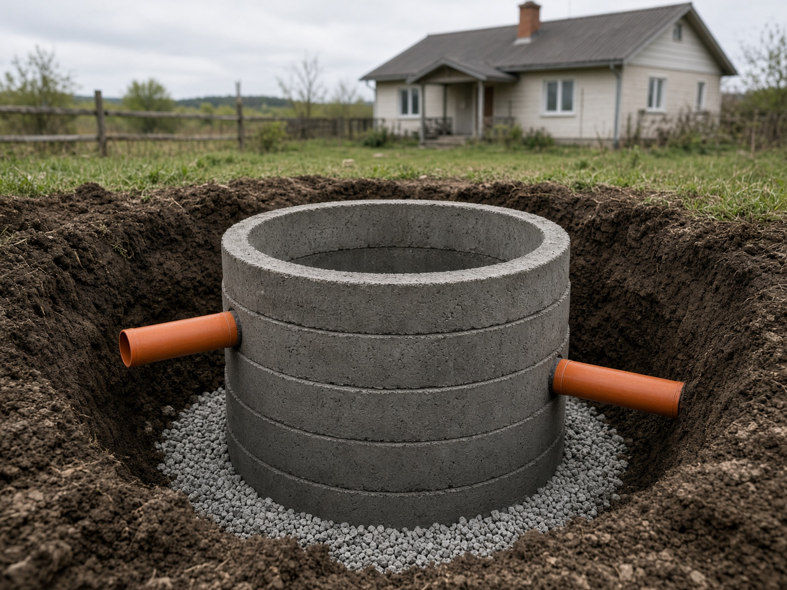
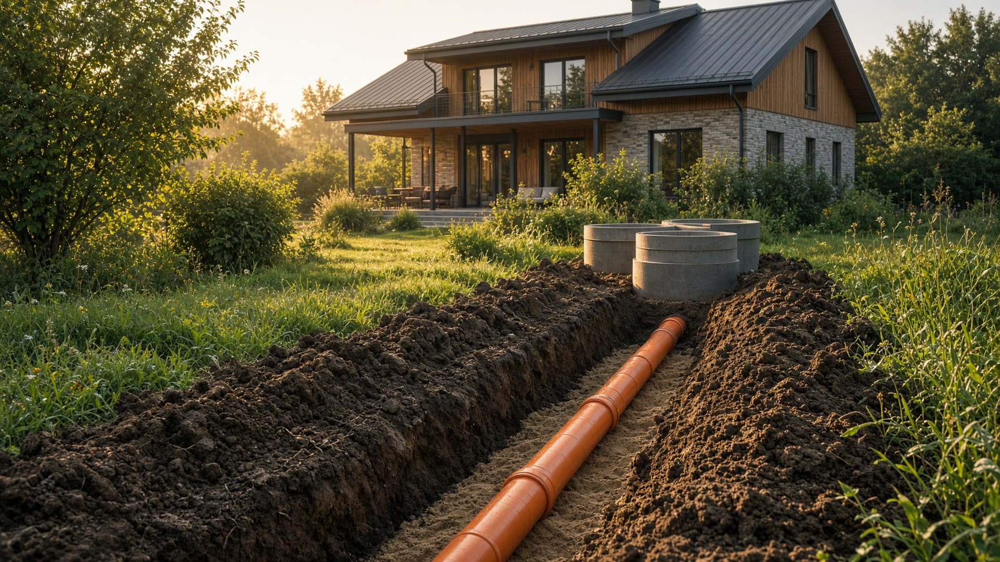
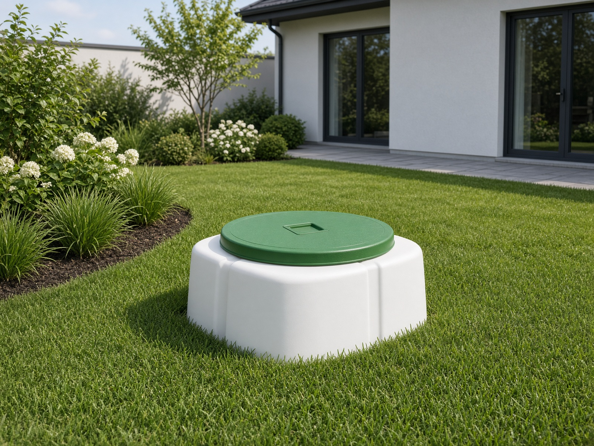
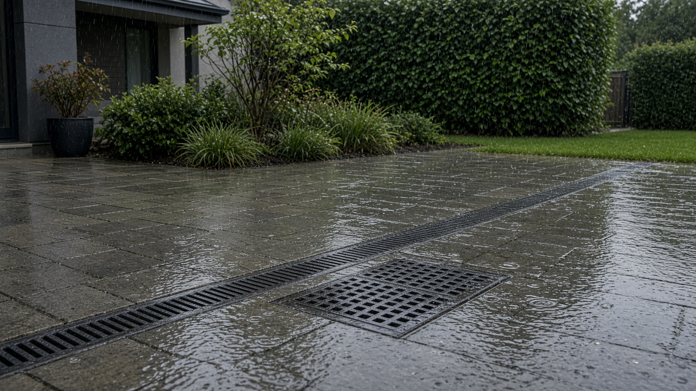
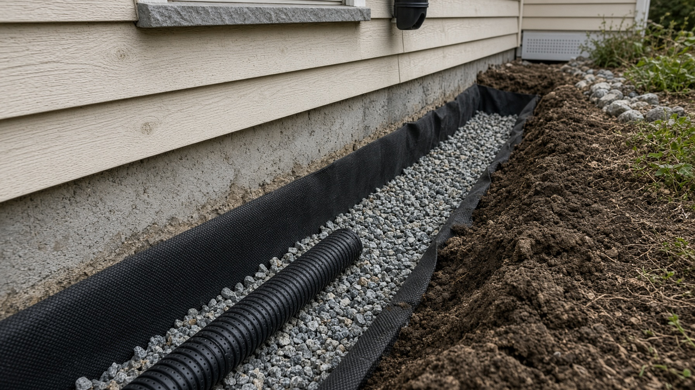
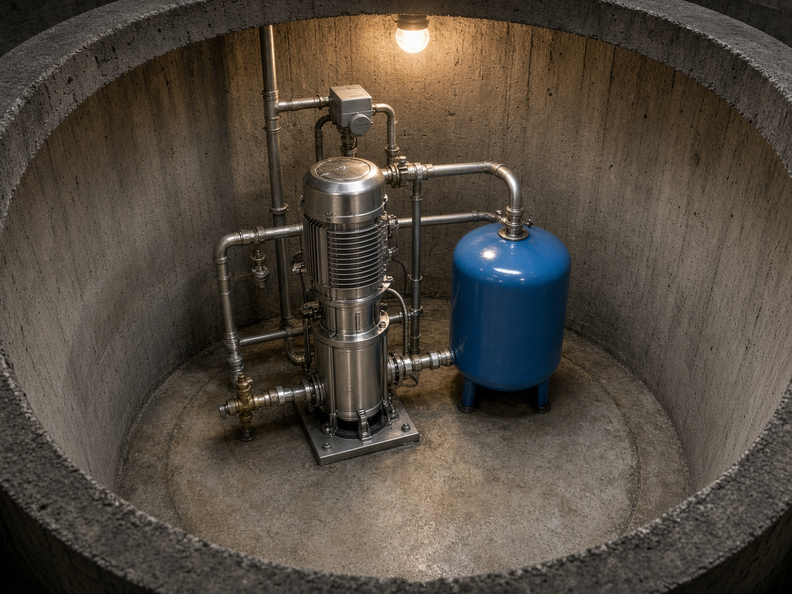
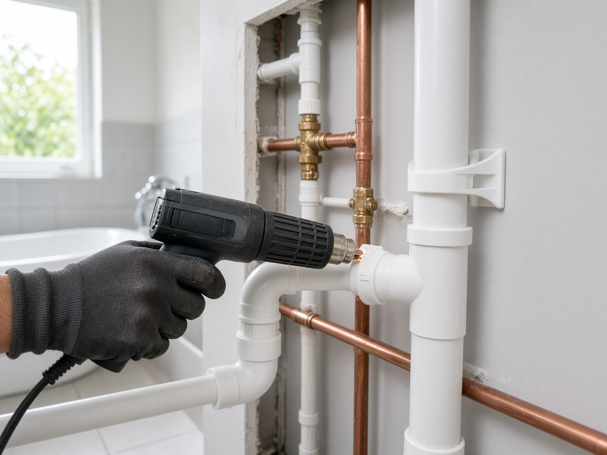
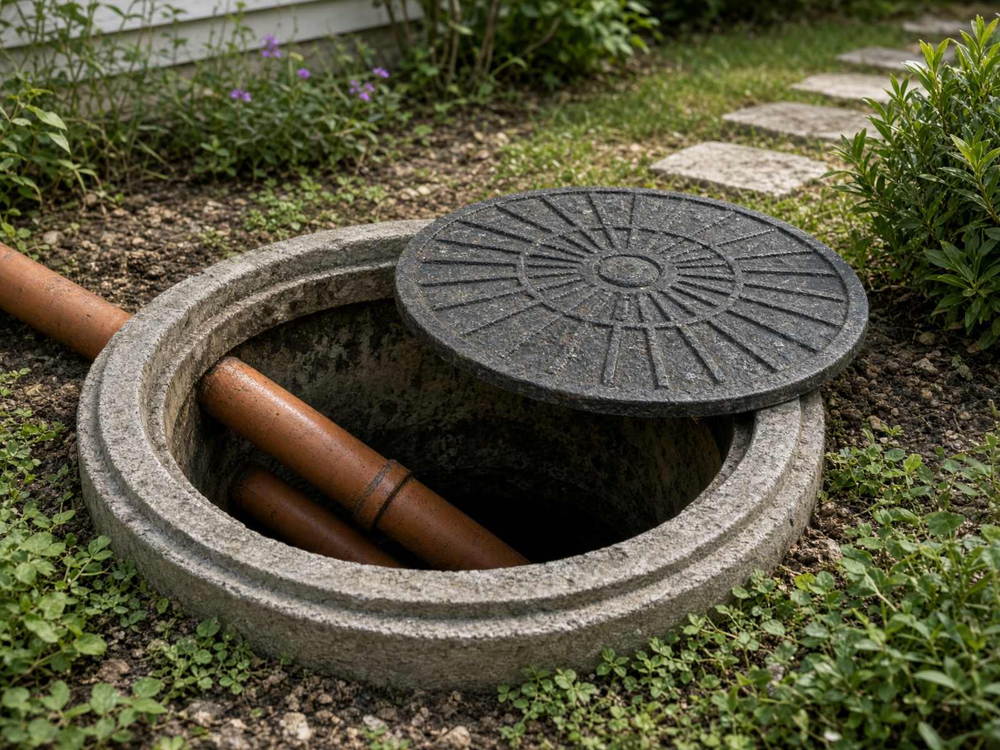
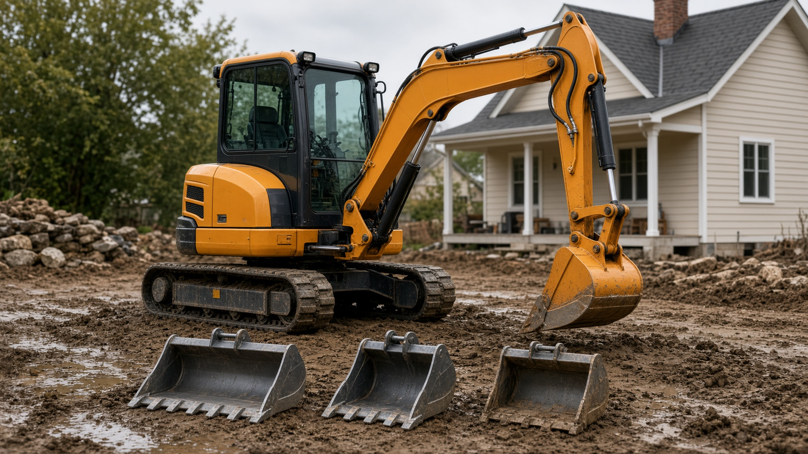
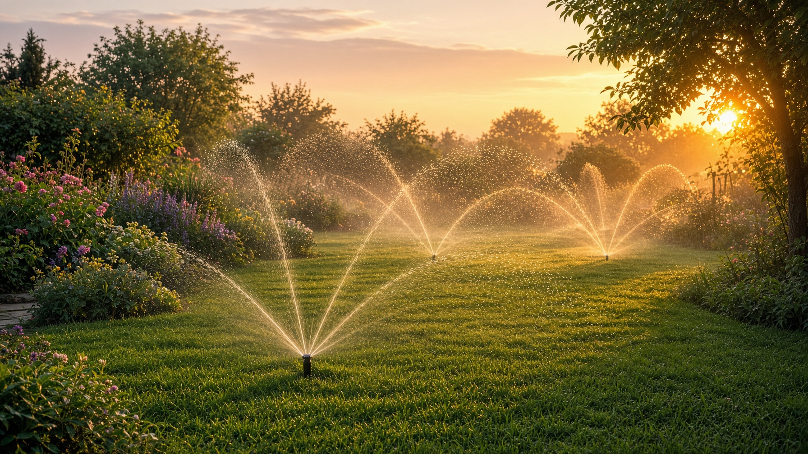

01Септик из
бетонных колец
Котлован, монтаж ЖБИ, трубы от дома, ревизионные и поворотные колодцы, герметизация и обратная засыпка.
Проектируем и монтируем инженерные системы участка под ключ: от траншеи и септика до воды в доме, дренажа и уличного полива.

Берём на себя земляные работы, монтаж, подключение и пуск. Вам не нужно собирать нескольких подрядчиков для одного объекта.

01Котлован, монтаж ЖБИ, трубы от дома, ревизионные и поворотные колодцы, герметизация и обратная засыпка.

02Чистовод, Юнилос, Топас, KANN и другие решения под условия участка.

03Приёмные коробки, лотки, трапы, трубы и организованный отвод воды.

04Дренаж дома или территории, ревизионные и поворотные колодцы.

05Кессон, насос, гидроаккумулятор, автоматика и ввод воды в дом.

06Разводка по точкам, полипропилен, фильтры, арматура и сантехнические приборы.

Решение с понятной конструкцией и доступной стоимостью материалов. Подбираем схему с учётом грунта, уклонов, объёма стоков и особенностей участка.
Материалы широко доступны, а сама система понятна в обслуживании.
Бетонные элементы рассчитаны на значительные нагрузки при корректном монтаже.
От котлована и колец до труб, колодцев, уплотнения и обратной засыпки.
Конструкция тяжёлая — для монтажа требуется техника или малая механизация. У нас есть собственный мини-экскаватор 3,5 т.
Свой мини-экскаватор 3,5 тонны позволяет оперативно выполнять траншеи, котлованы и планировку участка.

Прокладываем трубу от дома до септика, выполняем внутреннюю разводку под сантехнические приборы, заводим воду в дом и делаем уличный полив с подготовкой к зиме.

С возможностью отключения и слива на зиму.
Уплотнение внутри фундамента виброплитой.
Пайка, фильтры, арматура и установка приборов.
Сначала разбираемся в задаче и условиях. Затем выполняем монтаж последовательно, без хаоса из разных подрядчиков.
Осматриваем участок, грунт, уклоны и точки подключения. Определяем оптимальную схему.
Размечаем трассы и котлованы. Подбираем технику, материалы и оборудование.
Выполняем земляные работы, укладываем трубы, устанавливаем оборудование и колодцы.
Проверяем уклоны, соединения, пролив и работу системы. Передаём объект заказчику.
Напишите в мессенджер или оставьте заявку. Подскажем по схеме работ, технике и комплектации.